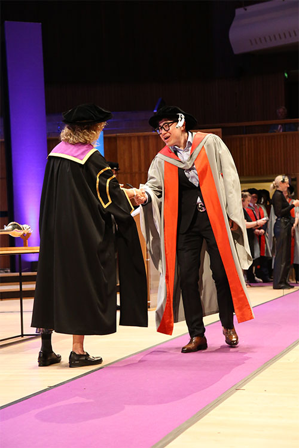
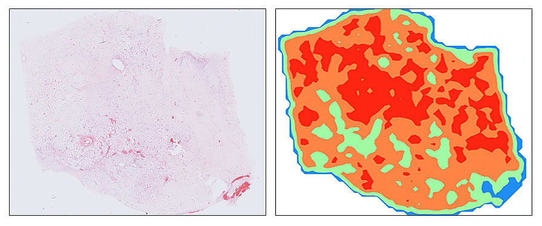
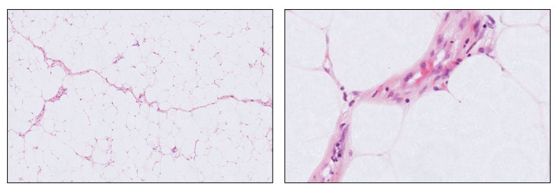
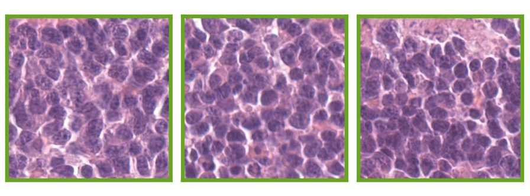
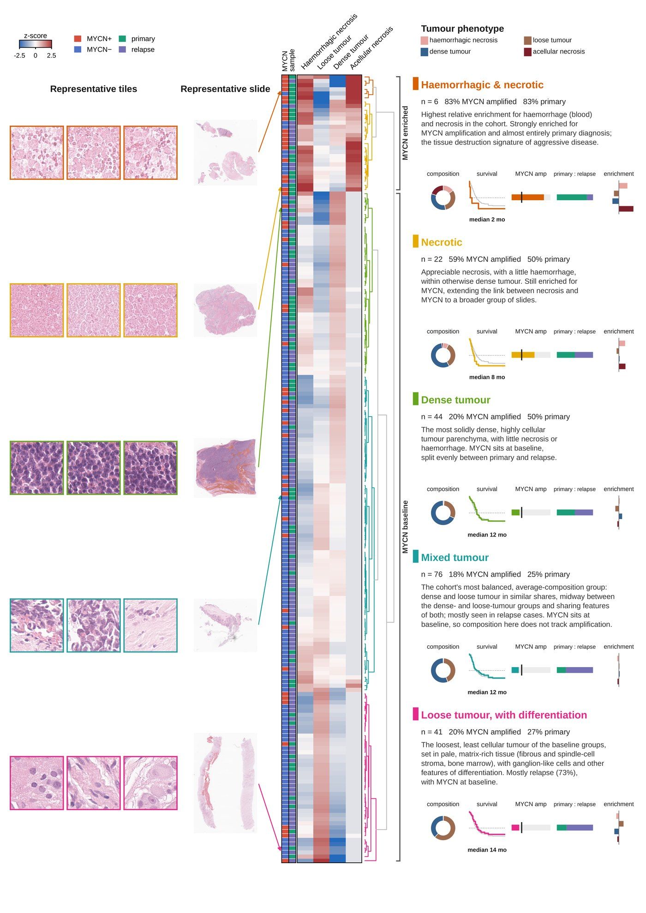
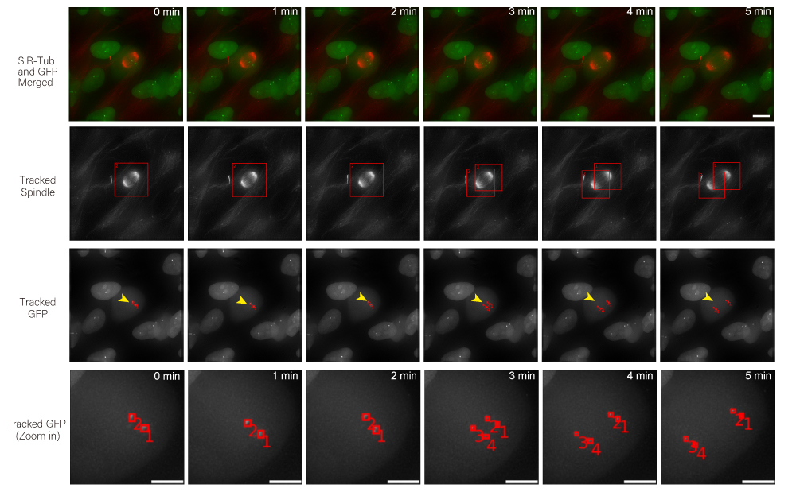
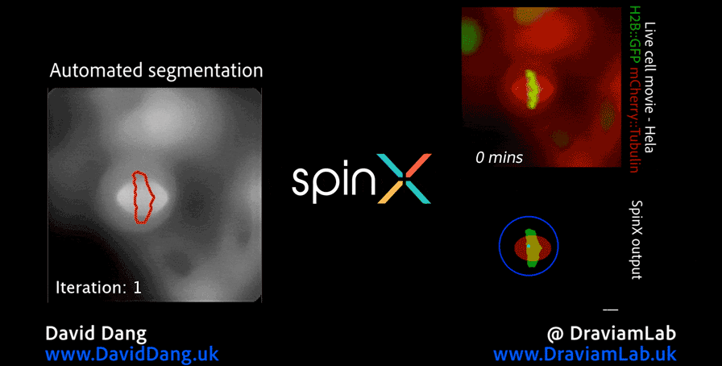

AI for Medical Imaging
Dr Binghao Chai (柴秉浩)
AI researcher developing solutions for digital pathology, cancer diagnostics, and microscopy imaging.
Computer Vision Scientist

AI for Medical Imaging
AI researcher developing solutions for digital pathology, cancer diagnostics, and microscopy imaging.
I develop AI methods for cancer tissue images that stay reliable outside the laboratory that produced them. Across projects the recurring questions are the same: does the model generalise to another hospital's slides, can a pathologist see the evidence behind its output, and does that still hold when the stain, the scanner or the tumour changes.

A model trained on one hospital's slides can fail quietly on another's, because every laboratory stains differently and every scanner renders colour differently. I measure that effect and try to remove it, using pathology foundation models as the object of study. The work runs on soft tissue sarcoma and its mimics — rare, morphologically diverse tumours where diagnostic agreement is already hard, which makes them an unusually honest test of whether a model has learned biology or has learned the laboratory.
Soft tissue sarcomas are rare and morphologically diverse, so diagnosis routinely needs specialist review and ancillary testing, and agreement is imperfect even between experts. That makes them a demanding setting for computational classification — and a revealing one, because a model that has quietly learned a laboratory's staining signature rather than the tumour's morphology is caught out faster here than on a large single-centre cohort.

One strand of my work, conducted in collaboration with Google Health and The Alan Turing Institute, explores how variations in tissue staining and scanning protocols across laboratories affect the performance of AI models in pathology. Using sarcoma pathology as a challenging test case, this project evaluates multiple pathology foundation models to understand their robustness and adaptability. The goal is to provide insights that can inform the development of AI systems capable of consistent and reliable performance across diverse clinical environments.
Alongside this, I also investigate tumour classification approaches in soft tissue pathology, including methods that address common diagnostic challenges. An example is an earlier work on developing computational pipelines to distinguish between benign lipomas and malignant atypical lipomatous tumours from whole slide images, a task that often requires detailed morphological assessment and specialist review. These complementary research directions, exploring colour-related techniques as well as advancing tumour classification methods, aim to pave the way for more reliable, adaptable, and clinically useful AI tools in digital pathology.

A molecular test tells you that a tumour carries an alteration; it does not tell you where in the tissue that alteration shows itself. I build weakly supervised models that predict molecular status from routine H&E slides and then decompose the prediction into morphological sub-populations a pathologist can inspect and name. The aim is not a stronger classifier but a readable one, producing evidence that can be located on the slide, reviewed, and disagreed with.
MYCN amplification has been a prognostic marker in paediatric neuroblastoma for decades, but it is assayed in bulk — alongside the heterogeneous tissue architecture a pathologist actually assesses, rather than within it. That leaves a gap in both directions: MYCN status alone cannot localise MYCN-associated biology, and morphology alone cannot assign molecular risk. Pheno-MYCN closes the gap from the image side, linking slide-level MYCN prediction to interpretable morphological sub-populations on routine H&E whole-slide images.

Across 189 slides, the framework resolves each into phenotypic clusters that expert pathology review maps onto recognised neuroblastoma morphologies. Cell-level profiling then shows that MYCN amplification marks every sub-population, but through a different feature in each: densely cellular yet disorganised tumour with sparser, less diverse cellular networks, and a disproportionate presence in necrotic and haemorrhagic regions. MYCN-amplified-like tissue is identifiable per slide from those features alone, and can be traced as a continuous gradient within a tumour rather than as a single label attached to the whole case.
The point of the prediction task here is diagnostic rather than competitive. A stronger classifier that cannot show its working is of limited use to a reporting pathologist; a model whose evidence can be pointed at on the slide can be checked, challenged, and eventually trusted. That matters most where molecular testing is constrained by cost or turnaround, which is where a readable H&E signal has the most to offer.

I design computational pipelines for analysing high-resolution 3D and time-lapse microscopy of live cells, with a particular focus on spindle and kinetochore dynamics. The aim is to make tracking in crowded multicellular environments more scalable, reliable, and biologically informative for real experimental workflows. This strand of work has led to Multi-SpinX, related methodological publications, and deployment into ZEISS imaging software.
What makes this hard is not the volume of data but its geometry. The structures move in three dimensions, change shape as they move, and in a confluent field they overlap and occlude each other, so an identity that is obvious to a human across two frames is genuinely ambiguous to a tracker. Manual annotation resolves it and does not scale; that gap is what these frameworks are built to close.

As part of this research, I led the development of Multi-SpinX, an advanced computational framework for automated tracking of mitotic spindles and kinetochores in multicellular environments. During mitosis, the mitotic spindle, a dynamic microtubule-based structure, orchestrates the segregation of chromosomes, which are attached via the kinetochore at their centromeric regions. Both structures undergo complex and often independent movements in 3D space over time, making them particularly challenging to track in crowded or high-throughput imaging experiments. Multi-SpinX extends the capabilities of the original SpinX system, which was limited to single-cell metaphase analysis. The framework was developed in collaboration with Prof. Viji Draviam (Queen Mary University of London), Prof. Kozo Tanaka (Tohoku University), ZEISS, and other colleagues. Multi-SpinX is now integrated into ZEISS arivis Pro and ZEISS arivis Cloud, and provides a scalable solution for researchers studying spindle-kinetochore dynamics, enabling richer quantitative analyses of mitosis in complex multicellular contexts.